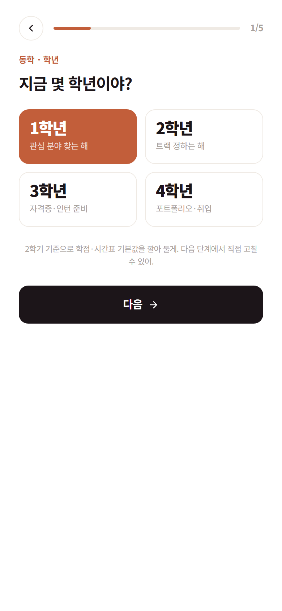
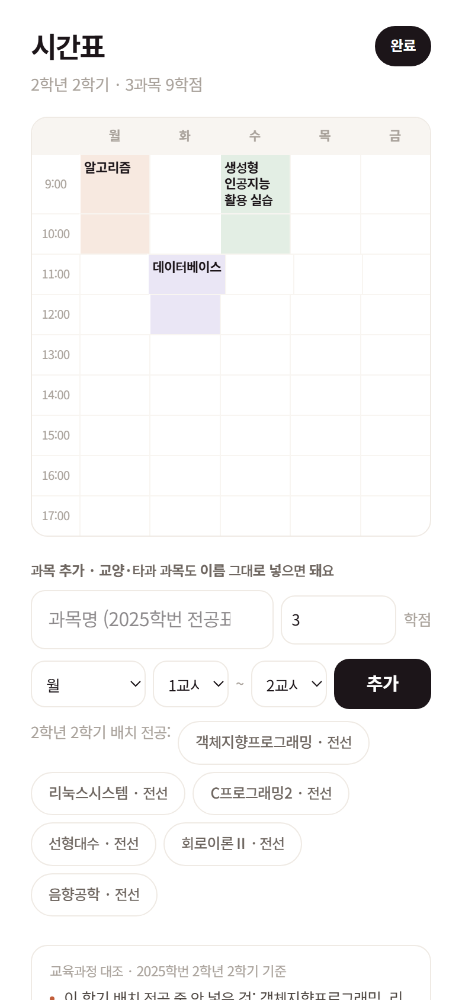

쓰는 법은 세 단계

① 학년·학번·관심·목표·학점
표준값 같은 건 없습니다. 향림통 숫자를 그대로 넣습니다.
표준값 같은 건 없습니다. 향림통 숫자를 그대로 넣습니다.

② 시간표 입력
과목명은 내 학번 전공표에서 자동완성. 넣는 즉시 교육과정과 대조합니다.
과목명은 내 학번 전공표에서 자동완성. 넣는 즉시 교육과정과 대조합니다.

③ 홈이 내 것이 됩니다
남은 학점, 대조 결과, 이번 주 일정, 학과 공지, 다음 한 걸음.
남은 학점, 대조 결과, 이번 주 일정, 학과 공지, 다음 한 걸음.
동학 · 사용 흐름
3 / 8